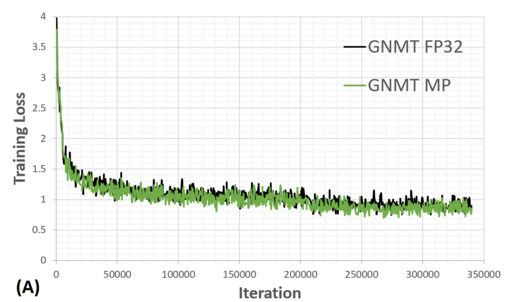

GNMT¶
Model¶
- We have 2 models based on RNNs:
- small NMT (config en-de-nmt-small.py ) model:
- the embedding size for source and target is 512
- 2 birectional LSTM layers in encoder, and 2 LSTM layers in decoder with state 512
- the attention mechanism with size 512
- GNMT-like model based on Google NMT (config en-de-gnmt-like-4GPUs.py ):
- the embedding size for source and target is 1024
- 8 LSTM layers in encoder, and 8 LSTM layers in decoder with state 1024
- residual connections in encoders and decoders
- first layer of encoder is bi-directional
- GNMTv2 attention mechanism
- the attention layer size 1024
- small NMT (config en-de-nmt-small.py ) model:
Training¶
- Both models have been trained with Adam. The small model has following training parameters:
- intial learning rate to 0.001
- Layer-wise Adaptive Rate Clipping (LARC) for gradient clipping.
- dropout 0.2
- The large model was trained with following parameters:
- learning rate starting from 0.0008 with staircase decay 0.5 (aka Luong10 scheme)
- dropout 0.2
Mixed Precision¶
GNMT-like model convergense in float32 and Mixed Precision is almost exactly the same.
